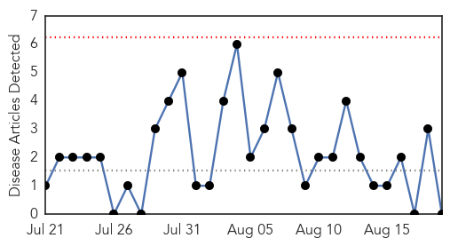

Pertussis
30-Day Web Trend
0 alerts, 0 warnings

30-Day Twitter Trend
1 alerts, 0 warnings
Article Locations

Article Confidences

Top Articles:
-
No articles found for Aug 19, 2015
Top Tweets:
-
No tweets found for Aug 19, 2015
Measles
30-Day Web Trend
0 alerts, 0 warnings
30-Day Twitter Trend
0 alerts, 0 warnings

Article Locations

Article Confidences

Top Articles:
- 0.909
- Fourth measles case confirmed at UQ's St Lucia campus
- 0.844
- Four cases in five weeks
- 0.803
- Four students diagnosed with measles at University of Queensland in Brisbane
- 0.649
- Woman’s measles death not related to Disneyland outbreak, first measles death in US since 2003
- 0.590
- Lead Developer Of HPV Vaccines Comes Clean, Warns Parents & Young Girls It’s All A Giant Deadly Scam
Top Tweets:
-
No tweets found for Aug 19, 2015